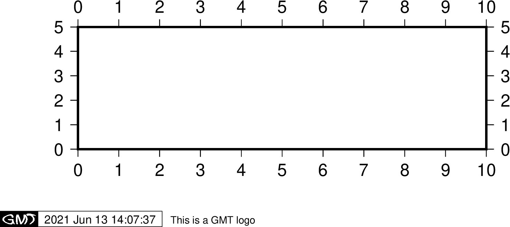

-U 选项¶
-U 选项用于在图上绘制一个带有GMT标识的时间戳。其语法为:
-U[label][+c][+jjust][+odx/dy]
-U 不加任何参数时会在当前图的左下角添加一个带GMT标识的时间戳
-Ulabel 会在时间戳后打印字符串 label，比如
-U"This is string"-U+c 会在时间戳后打印当前命令
-U+jjust+odx/dy 用于控制将时间戳的哪个锚点 与当前底图的左下角对齐，以及其偏移量。例如，
-U+jBL+o0/0表示将时间戳的左下角与底图左下角对齐
GMT参数中有一些可以控制时间戳：
MAP_LOGO 控制是否绘制时间戳，默认值为 FALSE
MAP_LOGO_POS 用于控制时间戳的位置
FORMAT_TIME_STAMP 用于控制时间戳的显示格式
FONT_LOGO 时间戳中文本字体
gmt basemap -R0/10/0/5 -JX10c/3c -Bx1 -By1 -U"This is a GMT logo" -png GMT_-U

-U 选项加时间戳¶
重要
每个带有 -U 选项的绘图命令都会绘制一遍时间戳，因而一张图中只需要在一个绘图命令中使用 -U 即可。
注解
修改UNIX 环境变量 TZ 可以控制时间戳中时间所使用的时区，默认为当地时区。例如，使用 export TZ=Asia/Shanghai 可以将时区设置为东八区。